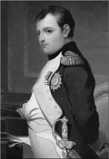

34 NAPOLEON BONAPARTE 1769-1821
Jendral
dan Kaisar Perancis yang tenar, Napoleon I, keluar dari
rahim ibunya di Ajaccio, Corsica, tahun 1769. Nama aslinya
Napoleon Bonaparte. Corsica masuk wilayah kekuasaan Perancis
cuma lima belas bulan sebelum Napoleon lahir, dan pada
saat-saat remajanya Napoleon seorang nasionalis Corsica yang
menganggap Perancis itu penindas. Tetapi, Napoleon dikirim
masuk akademi militer di Perancis dan tatkala dia tamat
tahun 1785 pada umur lima belas tahun dia jadi tentara
Perancis berpangkat letnan.
Empat tahun kemudian Revolusi Perancis meledak dan dalam
beberapa tahun pemerintah baru Perancis terlibat perang
dengan beberapa negara asing. Kesempatan pertama Napoleon
menampakkan kebolehannya adalah di tahun 1793, dalam
pertempuran di Toulon (Perancis merebut kembali kota itu
dari tangan Inggris), tempat Napoleon bertugas di kesatuan
artileri. Pada saat itu dia sudah tidak lagi berpegang pada
paham nasionalis Corsicanya, melainkan sudah menganggap diri
orang Perancis. Sukses-sukses yang diperolehnya di Toulon
mengangkat dirinya jadi brigjen dan pada tahun 1796 dia
diberi beban tanggung jawab jadi komando tentara Perancis di
Itali. Di negeri itu, antara tahun 1796-1797, Napoleon
berhasil pula merebut serentetan kemenangan yang membuatnya
seorang pahlawan tatkala kembali ke Perancis.
Di tahun 1798 ia memimpin penyerbuan Perancis ke Mesir.
Langkah ini ternyata merupakan malapetaka. Di darat, umumnya
pasukan Napoleon berhasil, tetapi Angkatan Laut Inggris di
bawah pimpinan Lord Nelson dengan mantap mengobrak-abrik
armada Perancis, dan di tahun 1799 Napoleon meninggalkan
pasukannya di Mesir dan pulang ke Perancis.
Begitu sampai di Perancis, Napoleon yang jeli itu dapat
berkesimpulan bahwa rakyat Perancis lebih terkenang dengan
kemenangan-kemenangannya di Itali ketimbang kegagalan
ekspedisi Perancis ke Mesir. Berpegang pada fakta ini, hanya
sebulan sesudah dia menginjak bumi Perancis, Napoleon ambil
bagian dalam perebutan kekuasaan bersama Albe Sieyes dan
lain-lainnya. Kup ini melahirkan sebuah pemerintah baru yang
disebut "Consulate" dan Napoleon menjadi Konsul pertama.
Kendati konstitusi sudah disusun dengan cermat dan diterima
lewat persetujuan plebisit rakyat, ini cuma kedok belaka
untuk menutupi kediktatoran militer Napoleon yang dengan
segera mampu menyikut dan melumpuhkan lawan-lawannya.
Naiknya Napoleon ke tahta kekuasaan betul-betul
menakjubkan. Tepatnya di bulan Agustus 1793, sebelum
pertempuran Toulon, Napoleon samasekali tidak dikenal orang.
Dia tak lebih dari seorang perwira rendah berumur dua puluh
empat tahun dan bukan sepenuhnya orang Perancis. Tetapi,
kurang dari enam tahun kemudian --masih dalam usia tiga
puluh tahun-- sudah menjelma jadi penguasa Perancis yang tak
bisa dibantah lagi, posisi yang digenggamnya selama lebih
dari empat belas tahun.
Di masa tahun-tahun kekuasaannya, Napoleon melakukan
perombakan besar-besaran dalam sistem administrasi
pemerintahan serta hukum Perancis. Misalnya, dia merombak
struktur keuangan dan kehakiman, dia mendirikan Bank
Perancis dan Universitas Perancis, serta menyentralisir
administrasi. Meskipun tiap perubahan ini punya makna
penting, dan dalam beberapa hal punya daya pengaruh jangka
lama khususnya untuk Perancis, tidaklah punya pengaruh yang
berarti buat negeri lain.
Tetapi salah satu perombakan yang dilakukan oleh Napoleon
punya daya pengaruh yang melampaui batas negeri Perancis
sendiri. Yaitu, penyusunan apa yang termasyhur dengan
sebutan Code Napoleon. Dalam banyak hal, code ini
mencerminkan ide-ide Revolusi Perancis. Misalnya, di bawah
code ini tidak ada hak-hak istimewa berdasar kelahiran dan
asal-usul, semua orang sama derajat di mata hukum.
Berbarengan dengan itu code tersebut cukup mendekati
hukum-hukum lama dan adat kebiasaan Perancis sehingga
diterima oleh rakyat Perancis dan sistem pengadilannya.
Secara umum, code itu moderat, terorganisir rapi dan ditulis
dengan ringkas, jelas, serta dapat diterima, tambahan pula
mudah difahami. Akibatnya, code ini tidak hanya berlaku di
Perancis (hukum perdata Perancis yang berlaku sekarang
hampir mirip dengan Code Napoleon itu) tetapi juga diterima
pula di negeri-negeri lain dengan perubahan-perubahan yang
disesuaikan dengan keperluan setempat.
Politik Napoleon senantiasa menumbuhkan keyakinan bahwa
dialah seorang yang membela Revolusi Perancis. Tetapi, di
tahun 1804 dia sendiri pula yang memperoklamirkan diri
selaku Kaisar Perancis. Tambahan lagi, dia mengangkat tiga
saudaranya keatas tahta kerajaan di beberapa negara Eropa.
Langkah ini tidak bisa tidak menumbuhkan rasa tidak senang
pada sebagian orang-orang Republik Perancis yang menganggap
tingkah itu sepenuhnya merupakan pengkhianatan terhadap
ide-ide dan tujuan Revolusi Perancis. Tetapi, kesulitan
utama yang dihadapi Napoleon adalah peperangan dengan
negara-negara asing.
Di tahun 1802, di Amiens, Napoleon menandatangani
perjanjian damai dengan Inggris. Ini memberi angin lega
kepada Perancis yang dalam tempo sepuluh tahun terus-menerus
berada dalam suasana perang. Tetapi, di tahun berikutnya
perjanjian damai itu putus dan peperangan lama dengan
Inggris dan sekutunya pun mulai lagi. Walaupun pasukan
Napoleon berulang kali memenangkan pertempuran di daratan,
Inggris tidak bisa dikalahkan kalau saja armada lautnya tak
terlumpuhkan. Malangnya untuk Napoleon, dalam pertempuran
yang musykil di Trafalgar tahun 1805, armada laut Inggris
merebut kemenangan besar. Karena itu, pengawasan dan
keampuhan Inggris di lautan tidaklah perlu diragukan lagi.
Meskipun kemenangan besar Napoleon (di Austerlitz melawan
Austria dan Rusia) terjadi enam minggu sesudah Trafalgar,
hal ini sama sekali tidak bisa menghapus kepahitan kekalahan
di sektor armada laut.
Di tahun 1808 Napoleon perbuat ketololan besar melibatkan
Perancis ke dalam peperangan yang panjang dan tak menentu
ujung pangkalnya di Semenanjung Iberia, tempat tentara
Perancis tertancap tak bergerak selama bertahun-tahun.
Tetapi, kekeliruan terbesar Napoleon adalah serangannya
terhadap Rusia. Di tahun 1807 Napoleon bertemu muka dengan
Czar, dan dalam perjanjian Tilsit mereka bersepakat
menggalang persahabatan abadi. Tetapi, persepakatan dan
persekutuan itu lambat laun rusak, dan di tahun 1812 bulan
Juni Napoleon memimpin tentara raksasa menginjak-injak bumi
Rusia.
Hasil dari perbuatan ini sudah sama diketahui. Tentara
Rusia umumnya menghindar dari pertempuran langsung
berhadapan dengan tentara Napoleon, karena itu Napoleon
dapat maju dengan cepatnya. Di bulan September Napoleon
menduduki Moskow. Tetapi, orang Rusia membumihanguskan kota
itu dan sebagian besar rata dengan tanah. Sesudah menunggu
lima minggu di Moskow (dengan harapan sia-sia Rusia akan
menawarkan perdamaian), Napoleon akhirnya memutuskan mundur,
tetapi keputusan ini sudah terlambat. Gabungan antara
pukulan tentara Rusia dan musim dingin yang kejam, tak
memadainya suplai pasukan Perancis mengakibatkan gerakan
mundur itu menjadi gerakan mundur yang morat-marit. Kurang
dari sepuluh persen tentara raksasa Perancis bisa keluar
dari bumi Rusia hidup-hidup.
Negara-negara Eropa lain, seperti Austria dan Prusia,
sadar benar mereka punya kesempatan baik menghajar Perancis.
Mereka menggabungkan semua kekuatan menghadapi Napoleon,dan
pada saat pertempuran di Leipzig bulan Oktober 1813,
Napoleon kembali mendapat pukulan pahit hingga sempoyongan.
Tahun berikutnya dia berhenti dan dibuang ke Pulau Elba,
sebuah pulau kecil di lepas pantai Itali.
Di tahun 1815 dia melarikan diri dari Pulau Elba, kembali
ke Perancis, disambut baik dan kembali berkuasa.
Kekuatan-kekuatan Eropa segera memaklumkan perang dan
seratus hari sehabis duduknya lagi ia di tahta kekuasaan,
Napoleon mengalami kekalahan yang mematikan di Waterloo.
Sesudah Waterloo, Napoleon dipenjara oleh orang Inggris
di St. Helena, sebuah pulau kecil di selatan Samudera
Atlantik. Di sinilah dia menghembuskan nafasnya yang
terakhir tahun 1821 akibat serangan kanker.
Karier militer Napoleon menyuguhkan paradoks yang
menarik. Kegeniusan gerakan taktiknya amat memukau, dan bila
diukur dari segi itu semata, bisa jadi dia bisa dianggap
seorang jendral terbesar sepanjang jaman. Tetapi di bidang
strategi dasar dia merosot akibat bikin
kekeliruan-kekeliruan besar, seperti misalnya penyerbuan ke
Mesir dan Rusia. Kesalahan strateginya begitu bego sehingga
Napoleon tak layak dijuluki pemimpin militer kelas wahid.
Apakah anggapan kedua ini tidak adil? Saya kira tidak.
Sesungguhnya, ukuran kebesaran seorang jendral terletak pada
kemampuannya mengelak dari berbuat kesalahan-kesalahan yang
menuntun kearah kehancuran. Hal semacam itu tak terjadi pada
diri Alexander Yang Agung, Jengis Khan dan Tamerlane yang
tentaranya tak pernah terkalahkan. Berhubung Napoleon pada
akhirnya dapat dikalahkan di tahun 1815, Perancis memiliki
daerah lebih kecil ketimbang yang pernah dipunyainya di
tahun 1879, saat pecahnya Revolusi.
Napoleon tentu saja seorang "egomaniac" dan sering
dianggap semodel dengan Hitler. Tetapi, ada perbedaan yang
ruwet diantara keduanya. Jika Hitler bertindak sebagian
terbesarnya atas dorongan ideologi yang tersembunyi,
Napoleon semata-mata terdorong oleh ambisi yang oportunistis
dan dia tak punya selera melakukan penjagalan besar dan
gila-gilaan. Dalam masa pemerintahan Napoleon, tidak
terdapat semacam kamp konsentrasi seperti yang dipunyai
Hitler.
Teramat masyhurnya nama Napoleon amat mudah menjebak
orang menganggap dia itu berpengaruh besar secara
berlebih-lebihan. Masa pengaruh jangka pendeknya memang
besar, mungkin lebih besar dari Alexander Yang Agung
walaupun tidak sebesar Hitler. (Menurut taksiran, sekitar
500.000 tentara Perancis mati dalam perang Napoleon, sedang
sekitar 800.000 orang Jerman tewas selama Perang Dunia
ke-2). Dengan ukuran apa pun, perbuatan pengrusakan Napoleon
lebih sedikit ketimbang apa yang diperbuat Hitler.
Dalam kaitan pengaruh jangka panjang, tampaknya Napoleon
lebih penting ketimbang Hitler, meski lebih kurang penting
dibanding Alexander Yang Agung. Napoleon melakukan perubahan
luas dalam tata administrasi Perancis, tetapi penduduk
Perancis cuma satu per tujuh puluh penduduk dunia. Dalam
tiap kejadian, perubahan administratif macam itu harus
ditinjau dari sudut perspektif yang sewajarnya. Pengaruhnya
terhadap orang Perancis jauh lebih sedikit ketimbang
perubahan-perubahan sejumlah kemajuan teknologi dalam masa
dua abad belakangan ini.
Banyak orang bilang, masa Napoleon menyediakan peluang
bagi perubahan-perubahan bagi terkonsolidasinya dan semakin
mapannya kaum borjuais Perancis. Di tahun 1815, tatkala
monarki Perancis akhirnya tersusun kembali,
perubahan-perubahan ini ditopang dan dilindungi begitu
baiknya sehingga kemungkinan bisa kembalinya pola-pola
sosial orde lama suatu hal yang sepenuhnya mustahil. Tetapi,
perubahan terpenting sebetulnya terjadi dan tersusun sebelum
Napoleon. Pada tahun 1799 ketika Napoleon memegang kendali
pemerintahan mungkin setiap jalan ke arah kembalinya ke masa
status quo sudah terlambat. Tetapi, lepas dari ambisi
Napoleon sendiri yang keraja-rajaan, dia memang pegang
peranan penting menyebarnya ide revolusi ke seluruh
Eropa.
Napoleon juga membawa akibat timbulnya pengaruh-pengaruh
luas dan besar dalam revolusi Amerika Latin. Penyerbuannya
ke Spanyol melemahkan pemerintahan Spanyol sehingga
cengkraman kolonialnya di daerah-daerah jajahannya juga
dengan sendirinya melonggar dan tidak efektif. Dalam situasi
de facto otonomi inilah gerakan-gerakan kemerdekaan Amerika
Latin mulai meletus.
Napoleon di pertempuran Waterloo.
Dari semua langkah perbuatan Napoleon, yang paling
penting dan paling punya pengaruh berjangka panjang justru
yang berada di luar rencananya dan tidak ada sangkut pautnya
dengan rencana Napoleon sendiri.
Di tahun 1803, Napoleon menjual daerah luas kepada
Amerika Serikat. Dia tahu, milik Perancis di Amerika Utara
sulit dilindungi menghadapi serangan-serangan Inggris.
Selain itu, dia juga perlu duit, penjualan tanah Louisiana
itu mungkin merupakan jual-beli tanah secara damai yang
terbesar dalam sejarah sekaligus mengubah Amerika Serikat
menjadi suatu negara yang berukuran benua. Sukar dibayangkan
apa bentuknya Amerika Serikat tanpa Louisiana ini. Pasti
akan merupakan negeri yang samasekali berbeda dengan apa
yang kita kenal sekarang. Dan pula layak diragukan Amerika
Serikat bisa menjadi negeri kuat tanpa jual-beli Louisiana
ini.
Napoleon, tentu saja, bukanlah satu-satunya orang yang
berperanan dan bertanggung jawab atas penjualan ini.
Pemerintah Amerika jelas pegang peranan pula. Tetapi,
penawaran Perancis menjual Louisiana diputuskan dalam
perundingan oleh satu orang. Dan orang itu Napoleon
Bonaparte.
|